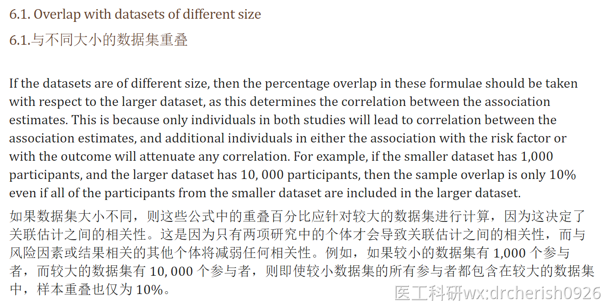

两样本孟德尔分析时如果出现了暴露和结局有一定的重叠情况则称为子样本孟德尔随机化（Subsample Mendelian randomization），因此这种情况需要计算或者估计样本重叠的大小和可能的偏移，尽量不要用有重叠的数据
8.5.2 Subsample Mendelian randomization
Especially when the outcome is binary, the sample size required in a Mendelian randomization experiment may be prohibitively large due to the expense of collecting data on the exposure. In this case, a subsample IV approach may be a cost-effective approach. Rather than collecting data on the exposure from the entire study sample, exposure data can be measured for a random subsample of (control) participants. As the association between the IV and the exposure is typically stronger than that between the IV and the outcome, the precision
of the IV estimate may not be noticeably affected by reducing the sample size on which the exposure is measured. Simulations have shown that a subsample IV analysis with exposure data on only 10% of participants may retain 90% of the power of the full-sample IV analysis [Pierce and Burgess, 2013]. Estimates
and confidence intervals with a single IV can be calculated using the ratio method and Fieller’s theorem (Section 4.1.5). With multiple IVs, a modified version of the two-stage least squares method can be used [Inoue and Solon, 2010]

两样本孟德尔随机化的样本重叠如何计算？
其实孟德尔随机化我们使用的都是汇总数据，直接的样本重叠率是无法计算的，只能通过一些方法间接解决这个问题。
1、估算
例子1：以下面的都为UKB的数据进行2样本MR分析为例：
暴露为甲减：编号ukb-b-4226

结局为心衰，编号ukb-d-I50

假设在暴露和结局的都是UKB的话，属于同一个队列，这种最大的重叠率是100%
例子2：暴露中有部分的UKB的数据，结局为UKB数据，进行2样本MR分析为例：
某个暴露有20万人，其中样本量里的5万人是UKB的 (自己从数据的描述查看有没有UKB的来源)
而结局是UKB的，总的样本量有有36万人
此时是最大的重叠情况，那么就是样本里的5万人与结局的36万人是有5万人的重叠，这时候重叠率是5/36=13.67%
两样本孟德尔随机化有样本重叠怎么办？
(仅供参考，实际情况自己分析看文献）
解释样本重叠程度的大小，样本重叠带来的弱工具偏倚取决于样本重叠程度的大小，可以计算样本重叠的影响（https://sb452.shinyapps.io/overlap/),，结局是二分类或连续性变量是略有不同的，结果分了10段从0-10%，到90%-100%，我们只需要关注我们重叠的比例就可以了，看对应比例的偏移和1类错误的百分比，可以写在文章里，参考文献：https://www.ncbi.nlm.nih.gov/pmc/articles/PMC5082560/ 


参数1：outcome类型（连续型，分类型）；
参数2：基因解释比，在统计学上也可叫决定系数，就是纳入的SNP的R2之和；
参数3：暴露的样本量；
参数4：结局的样本量；
参数5：最终纳入研究的工具变量个数
参数6：观察性研究估计值的偏倚（看文献， 观察性估计应以标准偏差单位(即每SD暴露增加)为单位。例如：找暴露和结局的观察性研究（队列研究或者RCT研究）文献里说， 每个单位的血压增加导致心脏病的风险是OR1.2, 那就是写1.2）
参数7：case有con的比例，对于结果为二分类的变量， 如果病例与对照组的比例为 1:1，则比例为 0.5
下面这个研究中说到：使用10%的参与者的暴露数据进行亚群分析，可以保留全样本亚群分析90%的统计功效[Pierce和Burgess，2013]，可以作为自己论证结果可信性的参考文献

此外，21年Nat. Com上的《Mendelian randomization analyses support causal relationships between brain imaging-derived phenotypes and risk of psychiatric disorders》它使用暴露是来源于纯UKB（N=33224）的IDP，结局之一神经性厌食症Anorexia nervosa【16,992 case and 55,525 control， N=72517】是多个队列的meta，其中涉及到768 case and 3,065 control 来自于UKBB，它最后得出的重叠率是5% 左右，（768+3065 = 3833）/ 72517 ≈ 5%

解决办法：
使用不重叠的数据，尽量使用强的工具变量（F statistics）